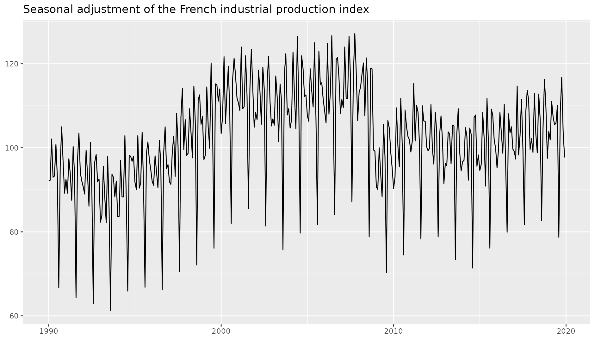
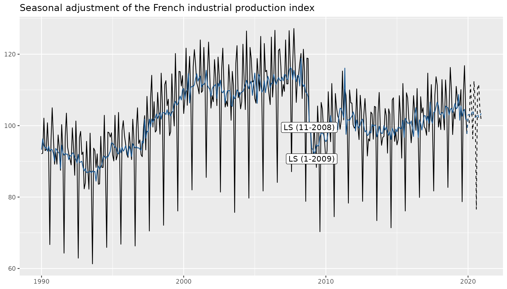
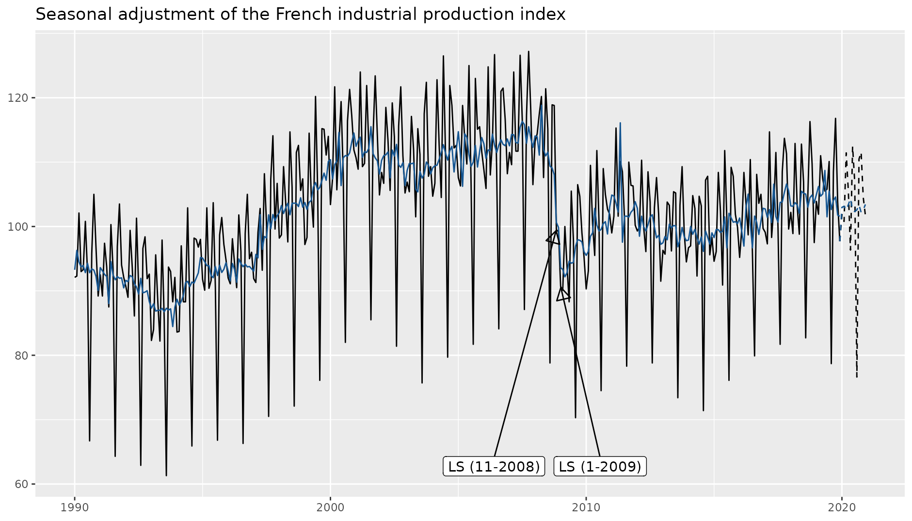

ggdemetra: extending ggplot2 to perform seasonal adjustment with RJDemetra
Alain Quartier-la-Tente
2025-06-25
Source:vignettes/ggdemetra.Rmd
ggdemetra.Rmdggdemetra is an extension of ggplot2 to add
seasonal adjustment statistics to your plots. The seasonal adjustment
process is done with RJDemetra that is an R
interface to JDemetra+, the
seasonal adjustment software officially recommended to the members of
the European Statistical System (ESS) and the European System of Central
Banks. RJDemetra implements the two leading seasonal
adjustment methods TRAMO/SEATS+
and X-12ARIMA/X-13ARIMA-SEATS.
There are 4 main functionalities in ggdemetra depending
of what you want to add in the graphic:
-
geom_sa(): to add a time series compute during the seasonal adjustment (the trend, the seasonal adjusted time series, etc.).
-
geom_outliers(): to add the outliers used in the pre-adjustment process of the seasonal adjustment. -
geom_arima(): to add the ARIMA model used in the pre-adjustment process of the seasonal adjustment. -
geom_diagnostics(): to add a table containing some diagnostics on the seasonal adjustment process.
Note ts objects cannot be directly used in
ggplot2. To convert ts or mts
object to data.frame, you can use the ts2df()
function. For example, the data ipi_c_eu_df used in this
package is obtained by applying the ts2df()function to the
ipi_c_eu data available in RJDemetra:
ipi_c_eu_df <- ts2df(ipi_c_eu)Seasonal adjustment specification
All the functions have some common parameters and especially those to defined the seasonal adjustment method:
-
methodis the method used for the seasonal adjustment: X-13ARIMA (method = "x13", the default) or TRAMO-SEATS (method = "tramoseats").
-
specis the seasonal adjustment specification. It can be the name of pre-defined specification (see?RJDemetra::x13or?RJDemetra::tramoseats) or a user-defined specification created byRJDemetra(byRJDemetra::x13_specorRJDemetra::tramoseats_spec).
-
frequencyis the frequency of the input time series. By default, the frequency is computed and a message is printed with the one chosen (usemessage = FALSEto suppress this message).
In the following examples, the data used is the French industrial
production index. By default, the seasonal adjustment will then be
processed with X-13ARIMA with a pre-defined specification
"RSA5c (automatic log detection, automatic ARIMA and
outliers detection and trading day and easter adjustment). However, in
the industrial production the working day effect has more economic sense
than the trading day effect and a gradual effect for easter does not
make economic sense for the aggregated series. The specification that
should be used with X-13ARIMA is
spec = RJDemetra::x13_spec("RSA3", tradingdays.option = "WorkingDays").
If no new data or seasonal adjustment specification is specified (method
or specification), these parameters is inherited from the previous
defined: therefore you only need to specify this parameter once.
library(ggplot2)
library(ggdemetra)
p_ipi_fr <- ggplot(data = ipi_c_eu_df, mapping = aes(x = date, y = FR)) +
geom_line() +
labs(title = "Seasonal adjustment of the French industrial production index",
x = NULL, y = NULL)
p_ipi_fr
Add the result of the seasonal adjusment
By default geom_sa() adds the seasonal adjusted time
series:
spec <- RJDemetra::x13_spec("RSA3", tradingdays.option = "WorkingDays")
p_ipi_fr +
geom_sa(color = "#155692",
spec = spec)
#> Frequency used: 12To add other components of the seasonal adjustment, use the
component parameter of geom_sa() (see
?RJDemetra::user_defined_variables() for the availables
parameters). For example, to add the forecasts of the input data and of
the seasonal adjusted series:
Add the outliers to the plot
There are four differents geometrics to add to the plot the names of the outliers used in the pre-adjustment process:
-
geom = "text"(the default) adds directly the names of the outliers andgeom = "label"draws a rectangle behind the names, making them easier to read.
-
geom = "text_repel"andgeom = "label_repel"do the same but text labels repel away from each other and away from the data points (see?ggrepel::geom_label_repel).
In our example, there are 3 outliers:
p_sa + geom_outlier(geom = "label")
They can be plotted in more readable way using the parameters of
ggrepel::geom_label_repel:
p_sa +
geom_outlier(geom = "label_repel",
ylim = c(NA, 65),
arrow = arrow(length = unit(0.03, "npc"),
type = "closed", ends = "last"))
Use the parameters first_date and last_date
to only have the outliers in a precise time interval. For example, to
only plot the outliers from 2009 use first_date = 2009:
p_sa +
geom_outlier(geom = "label_repel",
first_date = 2009,
ylim = c(NA, 65),
arrow = arrow(length = unit(0.03, "npc"),
type = "closed", ends = "last"))Add the ARIMA model
The ARIMA model used pre-adjustment process can be added to the plot
with geom_arima(). The parameter
geom = "label" draws a rectangle behind the ARIMA model,
making it easier to read:
p_sa +
geom_arima(geom = "label",
x_arima = -Inf, y_arima = -Inf,
vjust = -1, hjust = -0.1)Add a table with some diagnostics
A table with some diagnostics on the seasonal adjustment process can
be added with geom_diagnostics(). The desired diagnostics
have to be added to the diagnostics parameter (see
?RJDemetra::user_defined_variables() for the availables
diagnostics). For example, to add the result of the X-11 combined test
and the p-values of the residual seasonality qs and f tests:
diagnostics <- c("diagnostics.combined.all.summary", "diagnostics.qs", "diagnostics.ftest")
p_sa +
geom_diagnostics(diagnostics = diagnostics,
ymin = 58, ymax = 72, xmin = 2010,
table_theme = gridExtra::ttheme_default(base_size = 8))To customize the names of the diagnostics in the plot, pass a named
vector to the diagnostics parameter:
diagnostics <- c(`Combined test` = "diagnostics.combined.all.summary",
`Residual qs-test (p-value)` = "diagnostics.qs",
`Residual f-test (p-value)` = "diagnostics.ftest")
p_sa +
geom_diagnostics(diagnostics = diagnostics,
ymin = 58, ymax = 72, xmin = 2010,
table_theme = gridExtra::ttheme_default(base_size = 8))To add the table below the plot, you can for example use
gridExtra::grid.arrange():
p_diag <- ggplot(data = ipi_c_eu_df, mapping = aes(x = date, y = FR)) +
geom_diagnostics(diagnostics = diagnostics,
spec = spec, frequency = 12,
table_theme = gridExtra::ttheme_default(base_size = 8)) +
theme_void()
gridExtra::grid.arrange(p_sa, p_diag,
nrow = 2, heights = c(4, 1.5))Use existing model
ggdemetra offers several function that can be used to manipulate existing models.
mod <- RJDemetra::x13(ipi_c_eu[,"UK"], spec)The previous plots can be initialized with the
init_ggplot() function:
init_ggplot(mod) +
geom_line(color = "#F0B400") +
geom_sa(color = "#155692") +
geom_arima(geom = "label",
x_arima = -Inf, y_arima = -Inf,
vjust = -1, hjust = -0.1)The different components of seasonal adjustment models can be
extracted through calendar(), calendaradj(),
irregular(), trendcycle(),
seasonal(), seasonaladj(),
trendcycle() and raw().
data <- ts.union(raw(mod), raw(mod, forecast = TRUE),
trendcycle(mod), trendcycle(mod, forecast = TRUE),
seasonaladj(mod), seasonaladj(mod, forecast = TRUE))
colnames(data) <- c("y", "y_f",
"t", "t_f",
"sa", "sa_f")
ggplot(data = ts2df(data), mapping = aes(x = date)) +
geom_line(mapping = aes(y = y), color = "#F0B400", na.rm = TRUE) +
geom_line(mapping = aes(y = y_f), color = "#F0B400", na.rm = TRUE, linetype = 2) +
geom_line(mapping = aes(y = t), color = "#1E6C0B", na.rm = TRUE) +
geom_line(mapping = aes(y = t_f), color = "#1E6C0B", na.rm = TRUE, linetype = 2) +
geom_line(mapping = aes(y = sa), color = "#155692", na.rm = TRUE) +
geom_line(mapping = aes(y = sa_f), color = "#155692", na.rm = TRUE, linetype = 2) +
theme_bw()SI-ratio plots can be plotted with siratioplot and
ggsiratioplot:
ggsiratioplot(mod)And there is also an autoplot() function:
autoplot(mod)